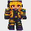
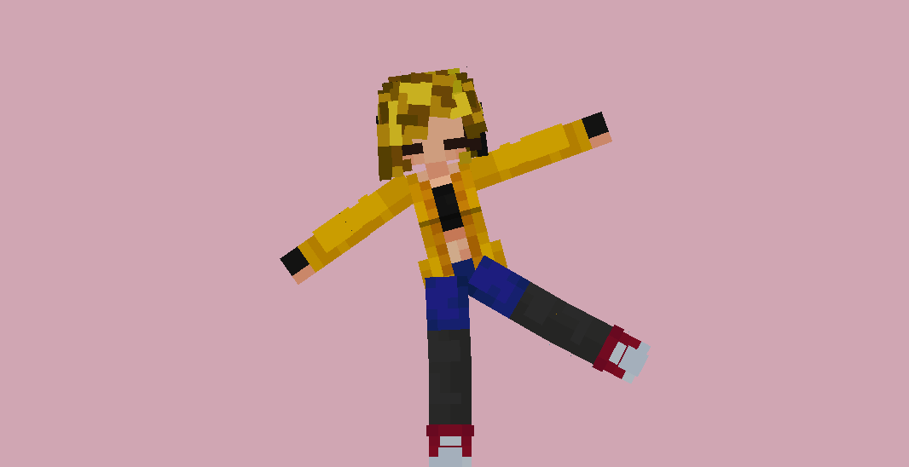

Общая информация
Изидора — персонаж вселенной MysticRealities. Здесь будет основное описание: происхождение, роль в истории, ключевые особенности.
Внешность
Описание внешности персонажа. Цвет волос, глаз, стиль одежды, особые приметы.
Характер
Описание характера: сильные и слабые стороны, что любит и чего боится.
История
История персонажа. Откуда родом, что произошло в прошлом, какие события сформировали её как личность.
Связи с другими персонажами
- Элирион Питара Кикс — старший брат.
- Нова Кэтфолл — (уточнить связь).
- Вирон Файрбайт — (уточнить связь).
Способности
- Способность первая
- Способность вторая
- Способность третья
Слабости
Описание слабостей и ограничений персонажа.
«Здесь будет цитата Изидоры.»
Фотогалерея
Нажми на фото, чтобы увеличить.

